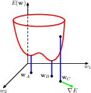
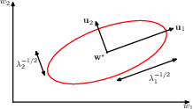
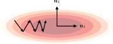
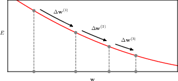
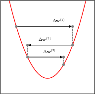
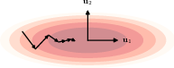
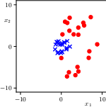
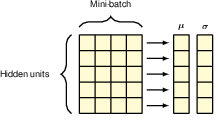
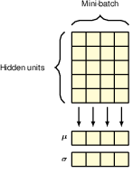

7 Gradient Descent
Once we have a neural network, the next question is how to train it. Well maybe not so straightforward. Often model building and training is an iterative process, and what we can train directly determines what we will build.
To train a network we’d also need a loss function, which measures how well the network performs. Since model performance can be measured in different ways, for different purposes we might need different loss functions. But since many network outcomes are modeled using various probability distributions, the most common one we use is -logp, the negative log data likelihood (often summed over a batch of data).
And although stochastic gradient descent (and its variants and derivatives) are the most common method to train a network, it’s actually not the only one. For example the optimization method might not be stochastic (using the whole dataset at once), or it might not be gradient based (gradient free optimization, Bayesian optimization, etc), but SGD is the most common one. For SGD to work we of course need the gradient, and to have gradient we’d need the loss function to be differentiable, and this necessitates some structural constraints on the network we are building, and the loss function we are using.
There have been many modifications to SGD, which improve the convergence properties of the optimizer, by studying the local curvature of the loss function. Most of these methods are actually heuristic, but some of them work quite well, especially the adaptive moments method (commonly known as Adam).
This chapter also covers some common normalization methods, including data normalisation, batch normalisation, and layer normalisation. This is a typical case of modifying the network architecture to improve the training process, showing that it’s not always easy to separate modeling building from model training.
7.1 Error surfaces

error function, local minimum A, global minimum B, and gradient at C
7.1.1 Local quadratic approximation

7.2 Gradient descent optimisation
simply put, gradient descent initialize the weights somewhere, calculate an increment using gradient information, and modify the weights using this information.
\[ \mathbf{w}^{(\tau)} = \mathbf{w}^{(\tau-1)} + \Delta \mathbf{w}^{(\tau-1)} \]
the bulk of our attention will be devoted to how to get the gradient, but the starting point is also quite important.
7.2.1 Use of gradient information
7.2.2 Batch gradient descent
7.2.3 Stochastic gradient descent
7.2.4 Mini-batches
7.2.5 Parameter initialisation
7.3 Convergence

7.3.1 Momentum
Momentum is a method to accelerate SGD by adding a fraction of the previous gradient to the current gradient, but how much of an effect this has depends on the curvature of the loss function. When the curvature is low, consecutive gradients are similar in direction, and thus accumulate to speed up the exploration. When the curvature is high, the gradients are different in direction and thus cancel each other out, leading to dampened oscillations.
 
Here we can see how dampening the oscillations helps the convergence.

Nesterov momentum is similar, but it effectively introduces a 1/2 step, first computing a step using the previous momentum, then calculate the gradient at that point, and then update the momentum again.
7.3.2 Learning rate schedule
7.3.3 RMSProp and Adam
7.4 Normalisation
The gopher(2022) paper also introduced a RMSNorm normalisation method.
7.4.1 Data normalisation

7.4.2 Batch normalisation

7.4.3 Layer normalisation
